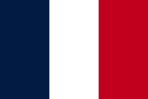
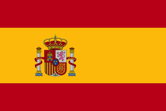

I am currently a student looking for future opportunities to develop my
skills and knowledge. Developing, analysing and communicating corporate
strategic decisions, is highly interesting to me and a field in which I excel.
This combined with my passion for computer sciences, allow me to take a
modern look into the development of current industries.
Look at my
LinkedIn
| Swiss German | |
| German | |
| French |  |
| Spanish |  |
| MUN | Football |
|---|---|
| Having gone to multiple Model United Nations and being the president of the EHL MUN committe from 2018 to 2021, I have developed a passion for debating and researching political situations around the world | For 3 years I coached and managed a U-12, U-15 and U-18 football team in Bangalore, India. Together we attending various local, regional and national competitions. |